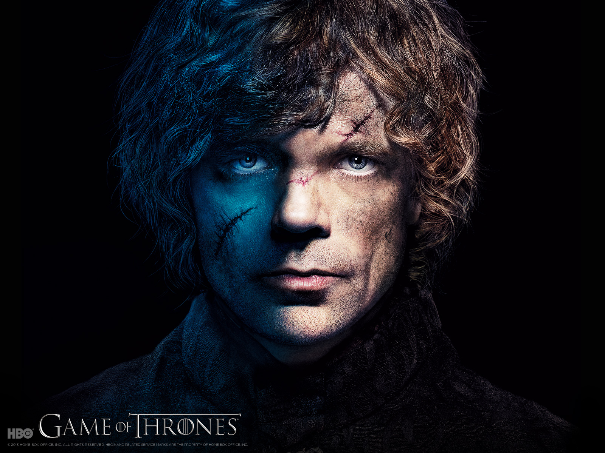

"I am the god of tits and wine!" --Tyrion LannisterTyrion Lannister is a member of the wealthy Lannister family, which always pays its debts. He's the son of Lord Tywin Lannister. Cersei and Jaime Lannister are his brother and sister. Born a dwarf, he is known as the Imp. Nevertheless he is known for using his wit and cleverness to avoid trouble and solve problems.
Tyrion Lannister is a character on the hit show Game of Thrones on HBO